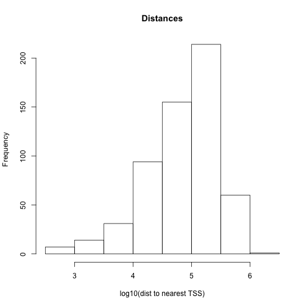

Bioconductor project has a dedicated package called GenomicRanges to deal with genomic intervals. In this section, we will provide use cases involving operations on genomic intervals. The main reason we will stick to this package is that it provides tools to do overlap operations. However package requires that users operate on specific data types that are conceptually similar to a tabular data structure implemented in a way that makes overlapping and related operations easier. The main object we will be using is called GRanges object and we will also see some other related objects from the GenomicRanges package.
GRanges (from GenomicRanges package) is the main object that holds the genomic intervals and extra information about those intervals. Here we will show how to create one. Conceptually, it is similar to a data frame and some operations such as using [ ] notation to subset the table will work also on GRanges, but keep in mind that not everything that works for data frames will work on GRanges objects.
library(GenomicRanges)
gr=GRanges(seqnames=c("chr1","chr2","chr2"),
ranges=IRanges(start=c(50,150,200),end=c(100,200,300)),
strand=c("+","-","-")
)
gr
## GRanges with 3 ranges and 0 metadata columns:
## seqnames ranges strand
## <Rle> <IRanges> <Rle>
## [1] chr1 [ 50, 100] +
## [2] chr2 [150, 200] -
## [3] chr2 [200, 300] -
## ---
## seqlengths:
## chr1 chr2
## NA NA
# subset like a data frame
gr[1:2,]
## GRanges with 2 ranges and 0 metadata columns:
## seqnames ranges strand
## <Rle> <IRanges> <Rle>
## [1] chr1 [ 50, 100] +
## [2] chr2 [150, 200] -
## ---
## seqlengths:
## chr1 chr2
## NA NA
As you can see it looks a bit like a data frame. Also, note that the peculiar second argument “ranges” which basically contains start and end positions of the genomic intervals. However, you can not just give start and end positions you actually have to provide another object of IRanges. Do not let this confuse you, GRanges actually depends on another object that is very similar to itself called IRanges and you have to provide the “ranges” argument as an IRanges object. In its simplest for, an IRanges object can be construcuted by providing start and end positions to IRanges() function. Think of it as something you just have to provide in order to construct the GRanges object.
GRanges can also contain other information about the genomic interval such as scores, names, etc. You can provide extra information at the time of the construction or you can add it later. Here is how you can do those:
gr=GRanges(seqnames=c("chr1","chr2","chr2"),
ranges=IRanges(start=c(50,150,200),end=c(100,200,300)),
names=c("id1","id3","id2"),
scores=c(100,90,50)
)
# or add it later (replaces the existing meta data)
mcols(gr)=DataFrame(name2=c("pax6","meis1","zic4"),
score2=c(1,2,3))
gr=GRanges(seqnames=c("chr1","chr2","chr2"),
ranges=IRanges(start=c(50,150,200),end=c(100,200,300)),
names=c("id1","id3","id2"),
scores=c(100,90,50)
)
# or appends to existing meta data
mcols(gr)=cbind(mcols(gr),
DataFrame(name2=c("pax6","meis1","zic4")) )
gr
## GRanges with 3 ranges and 2 metadata columns:
## seqnames ranges strand | V1 V2
## <Rle> <IRanges> <Rle> | <list> <list>
## [1] chr1 [ 50, 100] * | ######## ########
## [2] chr2 [150, 200] * | ######## ########
## [3] chr2 [200, 300] * | ######## ########
## ---
## seqlengths:
## chr1 chr2
## NA NA
# elementMetadata() and values() do the same things
elementMetadata(gr)
## DataFrame with 3 rows and 2 columns
## V1 V2
## <list> <list>
## 1 ######## ########
## 2 ######## ########
## 3 ######## ########
values(gr)
## DataFrame with 3 rows and 2 columns
## V1 V2
## <list> <list>
## 1 ######## ########
## 2 ######## ########
## 3 ######## ########
There are multiple ways you can read in your genomic features into R and create a GRanges object. Most genomic interval data comes as a tabular format that has the basic information about the location of the interval and some other information. We already showed how to read BED files as data frame. Now we will show how to convert it to GRanges object. This is one way of doing it, but there are more convinient ways described further in the text.
# read CpGi data set
cpgi.df = read.table("../data/cpgi.hg19.chr21.bed", header = FALSE,
stringsAsFactors=FALSE)
# remove chr names with "_"
cpgi.df =cpgi.df [grep("_",cpgi.df[,1],invert=TRUE),]
cpgi.gr=GRanges(seqnames=cpgi.df[,1],
ranges=IRanges(start=cpgi.df[,2],
end=cpgi.df[,3]))
You may need to do some pre-processing before/after reading in the BED file. Below is an example of getting transcription start sites from BED files containing refseq transcript locations.
# read refseq file
ref.df = read.table("../data/refseq.hg19.chr21.bed", header = FALSE,
stringsAsFactors=FALSE)
ref.gr=GRanges(seqnames=ref.df[,1],
ranges=IRanges(start=ref.df[,2],
end=ref.df[,3]),
strand=ref.df[,6],name=ref.df[,4])
# get TSS
tss.gr=ref.gr
# end of the + strand genes must be equalized to start pos
end(tss.gr[strand(tss.gr)=="+",]) =start(tss.gr[strand(tss.gr)=="+",])
# startof the - strand genes must be equalized to end pos
start(tss.gr[strand(tss.gr)=="-",])=end(tss.gr[strand(tss.gr)=="-",])
# remove duplicated TSSes ie alternative transcripts
# this keeps the first instance and removes duplicates
tss.gr=tss.gr[!duplicated(tss.gr),]
Reading the genomic features as text files and converting to GRanges is not the only way to create GRanges object. With the help of rtracklayer package we can directly import BED files.
require(rtracklayer)
import.bed("../data/refseq.hg19.chr21.bed")
Now we will show how to use other packages to automatically obtain the data in GRanges format. But you will not be able to use these methods for every data set so it is good to now how to read data from flat files as well. First, we will use rtracklayer package to download data from UCSC browser. We will download CpG islands as GRanges objects.
require(rtracklayer)
session <- browserSession()
genome(session) <- "mm9"
## choose CpG island track on chr12
query <- ucscTableQuery(session, track="CpG Islands",table="cpgIslandExt",
range=GRangesForUCSCGenome("mm9", "chr12"))
## get the GRanges object for the track
track(query)
## UCSC track 'cpgIslandExt'
## UCSCData with 627 ranges and 1 metadata column:
## seqnames ranges strand | name
## <Rle> <IRanges> <Rle> | <character>
## [1] chr12 [3235441, 3235920] * | CpG:_55
## [2] chr12 [3309325, 3310176] * | CpG:_112
## [3] chr12 [3365112, 3365428] * | CpG:_33
## [4] chr12 [3426606, 3427706] * | CpG:_112
## [5] chr12 [3572056, 3572883] * | CpG:_87
## ... ... ... ... ... ...
## [623] chr12 [120074998, 120075659] * | CpG:_64
## [624] chr12 [120081568, 120081824] * | CpG:_22
## [625] chr12 [120085202, 120085696] * | CpG:_45
## [626] chr12 [120086987, 120088377] * | CpG:_147
## [627] chr12 [120476260, 120476575] * | CpG:_23
## ---
## seqlengths:
## chr1 chr2 chr3 ... chrX_random chrY_random
## 197195432 181748087 159599783 ... 1785075 58682461
This is one of the most common tasks in genomics. Usually, you have a set of regions that you are interested in and you want to see if they overlap with another set of regions or see how many of them overlap. A good example is transcription factor binding sites determined by ChIP-seq experiments. In these types of experiments and followed analysis, one usually ends up with genomic regions that are bound by transcription factors. One of the standard next questions would be to annotate binding sites with genomic annotations such as promoter,exon,intron and/or CpG islands. Below is a demonstration of how transcription factor binding sites can be annotated using CpG islands. First, we will get the subset of binding sites that overlap with the CpG islands. In this case, binding sites are ChIP-seq peaks.
We can find the subset of peaks that overlap with the CpG islands using subsetByoverlaps() function. You will also see another way of converting data frames to GRanges.
pk1=read.table("../data/wgEncodeHaibTfbsGm12878Sp1Pcr1xPkRep1.broadPeak.gz")
head(pk1)
## V1 V2 V3 V4 V5 V6 V7 V8 V9
## 1 chr1 9990 10480 peak1 143 . 464.2 -1 -1
## 2 chr1 11020 12230 peak2 347 . 1123.6 -1 -1
## 3 chr1 13882 14300 peak3 68 . 221.8 -1 -1
## 4 chr1 22720 23011 peak4 33 . 109.6 -1 -1
## 5 chr1 23479 23786 peak5 40 . 129.5 -1 -1
## 6 chr1 25950 26457 peak6 69 . 225.6 -1 -1
# convert data frame to GRanges
pk1.gr=makeGRangesFromDataFrame(pk1,
seqnames.field=c("V1"),
start.field=c("V2"),
end.field=c("V3"))
# only peaks on chr21
pk1.gr=pk1.gr[seqnames(pk1.gr)=="chr21",]
# get the peaks that overlap with CpG
# islands
subsetByOverlaps(pk1.gr,cpgi.gr)
## GRanges with 44 ranges and 0 metadata columns:
## seqnames ranges strand
## <Rle> <IRanges> <Rle>
## [1] chr21 [ 9825359, 9826582] *
## [2] chr21 [ 9968468, 9968984] *
## [3] chr21 [15755367, 15755956] *
## [4] chr21 [19191578, 19192525] *
## [5] chr21 [26979618, 26980048] *
## ... ... ... ...
## [40] chr21 [46237463, 46237809] *
## [41] chr21 [46707701, 46708084] *
## [42] chr21 [46961551, 46961875] *
## [43] chr21 [47743586, 47744125] *
## [44] chr21 [47878411, 47878891] *
## ---
## seqlengths:
## chr1 chr10 chr11 chr12 chr13 chr14 ... chr6 chr7 chr8 chr9 chrX
## NA NA NA NA NA NA ... NA NA NA NA NA
For each CpG island, we can count the number of peaks that overlap with a given CpG island with countOverlaps().
#count the peaks that
# overlap with CpG islands
counts=countOverlaps(pk1.gr,cpgi.gr)
head(counts)
## [1] 0 0 0 0 0 0
findOverlaps() function can be used to see one-to-one overlaps between peaks and CpG islands. It returns a matrix showing which peak overlaps with which CpGi island.
findOverlaps(pk1.gr,cpgi.gr)
## Hits of length 45
## queryLength: 620
## subjectLength: 205
## queryHits subjectHits
## <integer> <integer>
## 1 123 1
## 2 154 3
## 3 389 8
## 4 401 13
## 5 415 16
## ... ... ...
## 41 595 155
## 42 598 166
## 43 600 176
## 44 611 192
## 45 613 200
Another interesting thing would be to look at the distances to nearest CpG islands for each peak. In addition, just finding the nearest CpG island could also be interesting. Often times, you will need to find nearest TSS or gene to your regions of interest, and the code below is handy for doing that.
# find nearest CpGi to each TSS
n.ind=nearest(pk1.gr,cpgi.gr)
# get distance to nearest
dists=distanceToNearest(pk1.gr,cpgi.gr,select="arbitrary")
dists
## Hits of length 620
## queryLength: 620
## subjectLength: 205
## queryHits subjectHits distance
## <integer> <integer> <integer>
## 1 1 1 384188
## 2 2 1 382968
## 3 3 1 381052
## 4 4 1 379311
## 5 5 1 376978
## ... ... ... ...
## 616 616 205 26211
## 617 617 205 27401
## 618 618 205 30467
## 619 619 205 31610
## 620 620 205 34089
# histogram of the distances to nearest TSS
dist2plot=mcols(dists)[,1]
hist(log10(dist2plot),xlab="log10(dist to nearest TSS)",
main="Distances")
